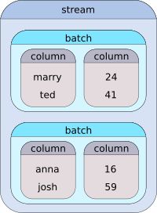

|
HiPipe
0.7.0
C++17 data pipeline with Python bindings.
|
HiPipe is a C++ library for efficient data processing. Its main purpose is to simplify and accelerate data preparation for deep learning models, but it is generic enough to be used in many other areas.
HiPipe lets the programmer build intuitive data streams that transform, combine and filter the data that pass through. Those streams are compiled, batched, and asynchronous, therefore maximizing the utilization of the provided hardware.
The complete source code can be downloaded from our official GitHub repository.
This project is under heavy development. The API is continuously changing without regard to backward compatibility.
Before proceeding, please install HiPipe by following the installation guide.
HiPipe provides many smaller utilities, such as loading CSV files to dataframes, base64 decoders, data splitting and much more. However, probably the most useful funcionality of the library is data stream processing.
Before we dive into details, we recommend to get familiar with the concept of C++ ranges and Range-v3 library by Eric Niebler. Ranges will soon become a fundamental part of C++ standard and Range-v3 library is an experimental implementation of the proposal. To sum up the idea, a range can be thought of as a pair of begin/end iterators with potentially infinite distance.
Now, a stream in the context of HiPipe is a range of batches, where each batch contains one or more columns. To demonstrate this concept on an example, let us assume that we have a table of four users and each user has properties: login and age:
| login | age |
|---|---|
| marry | 24 |
| ted | 41 |
| anna | 16 |
| josh | 59 |
A stream made of such data with batch size of two may look as following:

Of course, the stream may as well be loaded from a file or a database and may even be infinite. HiPipe provides many tools to manipulate such streams using the pipe "|" operator. The following example demonstrates the main idea of stream pipelining (see the full example in example.cpp):
For more information, please refer to the modules documentation section and browse the API reference.
In HiPipe, when we talk about multidimensional data, we are talking about nested ranges. For instance, std::vector<int> is a one dimensional vector and std::vector<std::vector<int>> is a two dimensional vector.
Most of the stream modifiers have a special parameter called dim<N>, that denotes in which dimension should the modifier operate. For instance, consider the transform() from our previous example:
In HiPipe, there are no constraints on the shape of the columns. Batch sizes can differ batch to batch, as well as the sizes of the data across a single dimension. For instance, it is possible to have a batch of variably long sequences (e.g., a batch of video frames from videos of different length) and stream modifiers, such as transform() and filter(), will handle it in any dimension you choose. To define a column containing multidimensional data, the most simple solution is to wrap the data in std::vector (but any reasonable container will suffice):
HiPipe provides a convenient functions to convert and stream data to Python. This part of the documentation is yet to be prepared. Meanwhile, please refer to the Python binding API documentation.
1.8.16